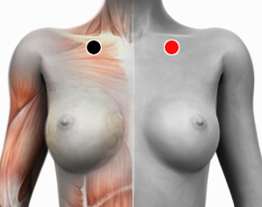

Edema
Pares
subclavia - subclavia
riñón - riñón
zona afectada - riñón

Tipos de edemas:
El Edema es una zona del cuerpo donde se retiene una cantidad anormal de líquido. Dentro de esta categoría mencionamos algunos:
Edema generalizado
La retención de líquido también se puede dar en forma generalizada, en tal caso puede obedecer a múltiples causas como:
Si hay disfunción renal, se puede tratar con el para riñón - riñón con ambas polaridades en cada imán y buscar los agentes causantes.
También puede deberse a una disfunción del sistema linfático, responsable de drenar los líquidos intesticiales, en ese caso probar el par subclavia - subclavia. Revisar dieta, hábitos de ejercicio, equilibrio hormonal, balance iónico, etcétera.
* Por trauma o traumatismo entiéndase golpes (contusiones), cortaduras, quemaduras, cirugías o cualquier otro daño a un tejido u órgano.